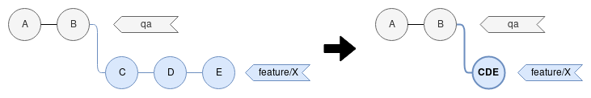
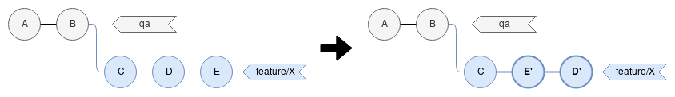

# How to become a Git hero?
## Distributed version control system

Note:
http://sgdev-blog.blogspot.com/2014/03/using-git.html
## Git basic commands
- git clone
- git status
- git add
- git commit
- git push
- git pull
- git checkout (-b)
git clone
Get a copy of an existing project
git clone git@github.com:loriepisicchio/git-dojo-practice.git
Prefer SSH URLs
### git status
Display files having differences with `HEAD`
```sh
git status
```

### git add
Add file(s) to the index
```sh
git add README.md
git add *.sh
```
### git commit
Push changes into local repository
```sh
git commit -m "A new feature"
```
### git push
Push local commits to remote repository
```sh
git push <remoteName> <remoteBranchName>
git push origin master
git push --set-upstream origin master
```
### git pull
Get changes from a remote repository into current branch
```sh
git pull <remoteName> <remoteBranchName>
git pull origin master
```
Defaults to `merge` strategy, can be configured to `rebase`.
### git pull strategies

```
[pull]
# force rebasing on pull but keep actual merges
rebase = preserve
```
### git checkout
Switch to a branch
```sh
git checkout branchName
# equivalent to
git switch branchName
```
Create a branch
```sh
git checkout -b branchName
# or
git switch -c branchName
```
## Practice
- Fork project [git-dojo-practice](https://github.com/loriepisicchio/git-dojo-practice) on Github
- Clone your fork on your local machine
- Create a new branch
- Add a new file with some content
- Commit and push this file
## More advanced commands
Remove file(s):
```sh
git rm fileName
```
Move file:
```sh
git mv oldFileName newFileName
```
## Practice
- Create two files, commit and push
- Move one of them
- Delete the other
- Commit and push changes
## A useful command: git log
Display history of commits

But even better: view branches history
git lol
[alias]
lol = log --graph --decorate --pretty=oneline --abbrev-commit
## Configure what goes under source control
Configure patterns to be ignored in `.gitignore` file
[Example](http://gitignore.io/api/java)
## Practice
- Add file `something.toto`
- Add `*.toto` in `.gitignore`
- Look at `git status`
- Then `git status --ignore`
Note that a `*.toto` file already in source control wouldn't be removed
## Fix unwanted changes
- Not commited: `git checkout` | `git restore`
- resets file in the state of the local branch
- Commited, not pushed: `git reset`
- rewind the history
- Pushed: `git revert`
- creates a new commit that reverts previous changes
## Practice
- Do a modification on a file, don't commit, revert the modification
- Do a modification on a file, commit it, revert the commit
## Git branches & conflict management

Very useful for parallel developments
Mainly used to isolate different features, bugfixes
## Git workflow presentation

## Practice
- Create a branch `feature/change-color`
- Edit `application.conf` file
- Commit and push
- Go back to branch `master`
- Create a branch `feature/add-size`
- Edit `application.conf` file by adding a new `size=100` conf
- Commit and push
- Try to merge branches in Github
## Best practice
Rebase before opening a Pull Request
```
git checkout qa
git pull
git checkout -
git rebase qa
```

Git pointers
- Every commit has a unique ID (SHA1)
9c531244
- A commit have 0..N parent(s)
- Everything else is a pointer to a commit
## Even better practice
Interactive rebase
```
git rebase -i qa
git rebase -i HEAD~3
```
Useful to clean history before opening a PR
- combine multiple commits into one
- reword a commit message
- reorder commits
Practice
Combining multiple commits using squash or fixup

- Create 4 commits:
- "Implementation"
- "Test"
- "Fix test"
- "README"
- Push
- Expected result history:
- "Implementation"
- "README"
- Don't forget to push!
Practice
Reword a commit message using reword
Practice
Reorder commits to enable squash between 2 commits separated in history

- Create 3 commits:
- "Implementation"
- "Update doc"
- "Oops, forgot the tests"
- Expected result history:
- "Implementation" (including tests)
- "Update doc"
## Auto-squash
Git will automatically squash commits with their fixup commits
```
git commit --fixup <hash>
git rebase -i --autosquash qa
```
Practice
Auto squash
- Create 3 commits:
- "Implementation"
- "Update doc"
- "Fixup implementation" (using
--fixup)
- Expected result history:
- "Implementation" (including the fixup)
- "Update doc"
## Interactive rebase
### More options
- `drop`: remove a commit from history (same as deleting the line)
- `edit`: stop and do whatever you want (edit content of a commit for instance)
- `exec`: execute a shell command
## Force is harmful
```
$ git push --force-with-lease origin feature-2
To /tmp/repo
! [rejected] feature-2 -> feature-2 (stale info)
error: failed to push some refs to '/tmp/repo'
```

## Stashing commits
```
git stash save
git stash pop
git stash list
```
## Practice
Stash
- Start a modification on wrong branch
- Use stash to fix your mess
## Amend commits
```
git commit --amend -m "an updated message"
```
## Nothing is lost
```
git reflog
```
## Other useful commands
Partial commit (_Easier with your IDE_)
```
git commit -p
```
Copy a commit from another branch into current one
```
git cherry-pick <sha1>
```
Find the culprit!
```
git bisect
```
## References
- [Learn Git branching](https://learngitbranching.js.org/?locale=fr_FR)
- [Git flight rules](https://github.com/k88hudson/git-flight-rules)
- [ZSH git aliases](https://github.com/robbyrussell/oh-my-zsh/wiki/Cheatsheet#git)
- [Git detailed tutorial](https://www.vogella.com/tutorials/Git/article.html)
Looking for an internship? https://www.kelkoogroup.com/fr/jobs/ ;)